2.2 Intermolecular Forces
Dipoles, hydrogen bonding, physical properties and solvent choice
2.2 Intermolecular Forces
本页对应 2.2 Intermolecular Forces.pdf.pdf。重点区分 intramolecular forces 与 intermolecular forces，并用 particle-level reasoning 解释 boiling point、melting point、surface tension、density 和 solubility。专业词汇保留 English。
Learning objectives
学完本页后，你应该能够：
- distinguish intramolecular bonds from intermolecular forces；
- explain induced dipole-induced dipole forces、permanent dipole-permanent dipole forces and hydrogen bonding；
- rank intermolecular interactions and compare their relative strengths；
- use molecular size、number of electrons、surface area and branching to explain boiling points；
- explain the anomalous properties of water；
- choose suitable solvents using the principle like dissolves like。
2.2.1 Intramolecular and intermolecular forces
Two different meanings of “force”
Intramolecular forces are forces within a molecule。它们包括 covalent bonds：single、double、triple and coordinate bonds。Breaking an intramolecular covalent bond requires a large amount of energy。
Intermolecular forces are attractions between neighbouring molecules。它们通常比 covalent bonds much weaker，但会显著影响 molecular physical properties，例如 boiling point、melting point、viscosity 和 solubility。
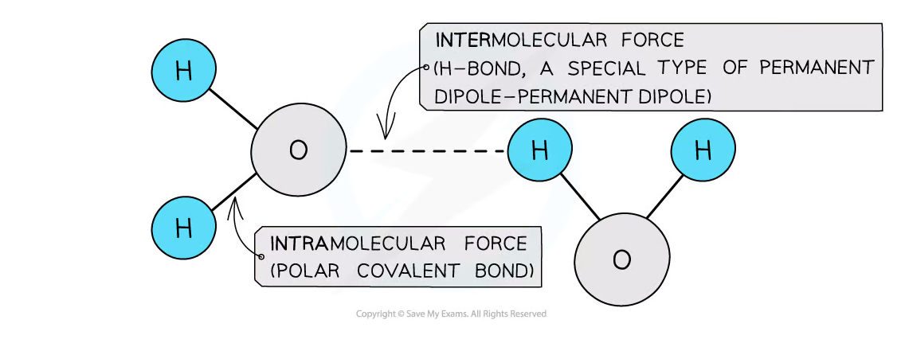
三类常见 intermolecular forces：
- Induced dipole-induced dipole forces，也称 London dispersion forces 或 van der Waals forces；
- Permanent dipole-permanent dipole forces，简称 permanent dipole-dipole forces；
- Hydrogen bonding，一种特别强的 permanent dipole-permanent dipole attraction。
一般 strength order 是：
\[ \text{metallic / ionic / covalent bonding} > \text{hydrogen bonding} > \text{permanent dipole-dipole} > \text{induced dipole-induced dipole} \]
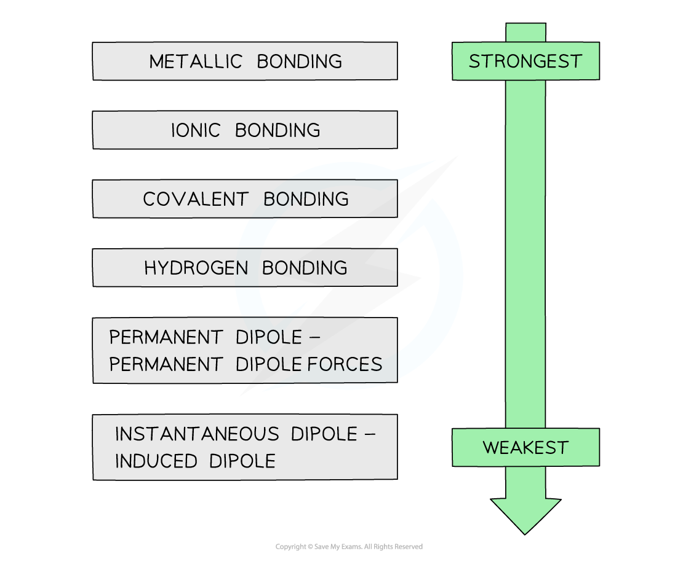
注意：同一类 force 的 strength 仍会随 molecule size、number of electrons、shape and contact area 改变。不要只根据 molecule 是否 polar 就直接判断 boiling point。
2.2.2 Induced dipole-induced dipole forces
Formation of temporary dipoles
即使 atom 或 molecule 是 non-polar，electron cloud 也一直在运动。某一瞬间，electrons 可能偏向一侧，使 molecule 出现 instantaneous dipole：一端 δ−，另一端 δ+。
这个 instantaneous dipole 会 repel / attract neighbouring molecule 的 electrons，在邻近 molecule 中 induce a dipole。随后，δ+ 与 neighbouring δ− 相互吸引，形成 induced dipole-induced dipole force。
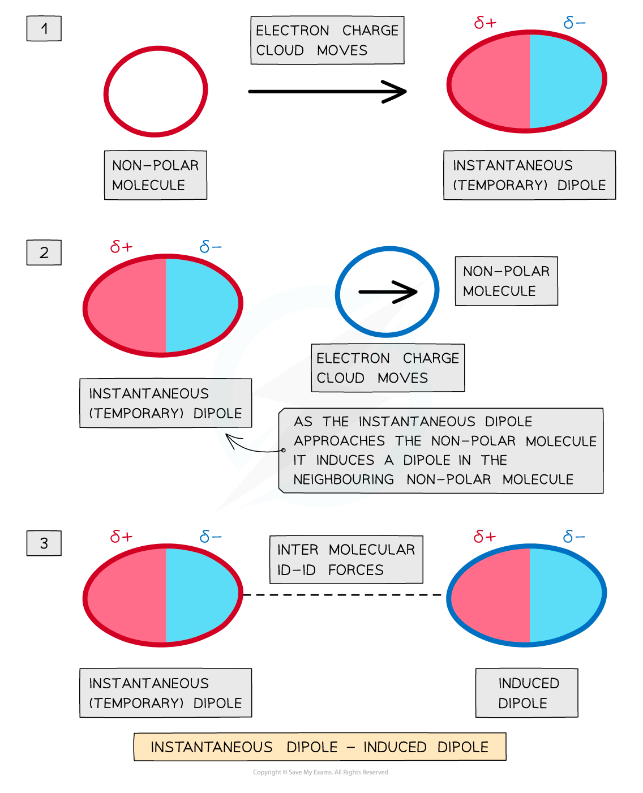
这些 forces 存在于 all atoms and molecules，包括 noble gases、alkanes 和 non-polar molecules。因为 electron cloud continuously changes，individual dipoles 只会短暂存在。
Relative strength
Induced dipole forces become stronger when：
- molecule has more electrons / larger relative molecular mass；
- electron cloud is more easily distorted，即 molecule has greater polarisation；
- molecules have a larger contact surface area。
例如 butane 与 propanone 具有相同 number of electrons。Butane 是 non-polar，只产生 induced dipole forces；propanone 是 polar，还具有 permanent dipole-dipole forces。因此 propanone 的 boiling point 更高。
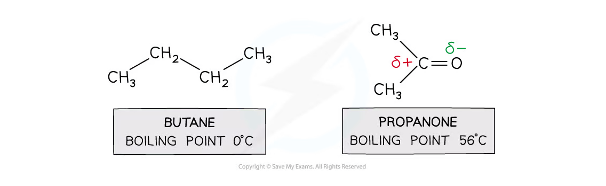
2.2.3 Permanent dipole-dipole forces
Polar molecules
如果 covalent bond 两端 atoms 的 electronegativity 不同，bonding pair 会被更 electronegative atom 吸引，产生 polar bond。如果 molecular shape 不能使 bond dipoles cancel，整个 molecule 具有 permanent dipole。
Polar molecule 一端 permanently δ+，另一端 permanently δ−。邻近 molecules 会排列，使 δ+ end 靠近另一 molecule 的 δ− end，产生 permanent dipole-dipole attraction。
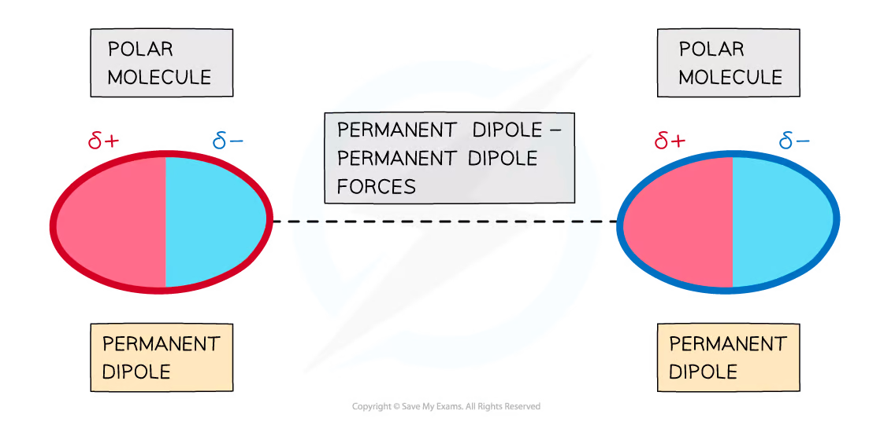
比较 permanent dipole-dipole 与 induced dipole-induced dipole 时：在 small molecules 且 electron number 相近的情况下，permanent dipole-dipole forces 通常 stronger。但 large non-polar molecules 可能因为 many electrons and large contact area 而具有更强 dispersion forces。
2.2.4 Hydrogen bonding
Definition and conditions
Hydrogen bonding 是一种 strong permanent dipole-permanent dipole attraction。形成 hydrogen bond 需要：
- hydrogen covalently bonded to a very electronegative atom：
N、OorF； - neighbouring molecule 中
N、OorFatom 上有 a lone pair； δ+hydrogen 与 lone pair 之间形成 attraction。
Hydrogen bond 必须从 lone pair 指向 δ+ H，通常用 dashed straight line 表示，不要把它画成 ordinary covalent bond。
Hydrogen bonding in water
Water molecule 中 oxygen 有 two lone pairs，因此 one water molecule 最多可参与 two hydrogen bonds through its lone pairs；同时 its two hydrogen atoms 也可作为 hydrogen-bond donors。
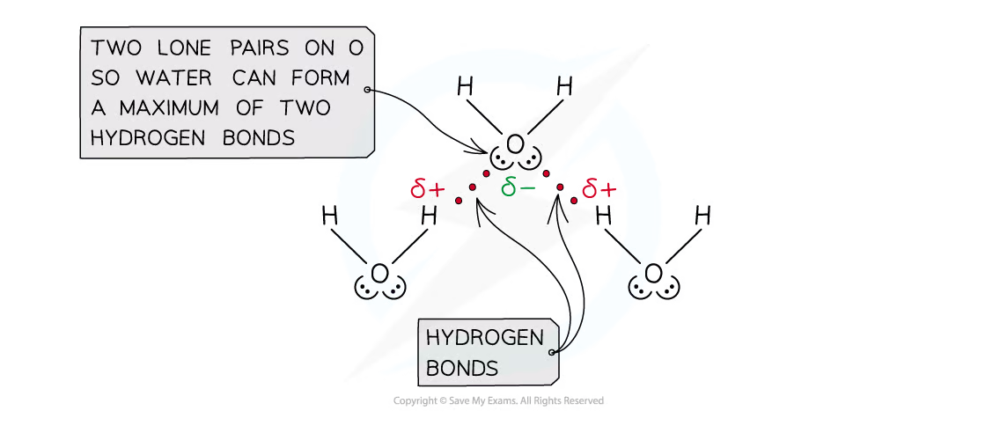
能形成 hydrogen bonding 的 compounds 包括：
| Compound / group | Required feature |
|---|---|
| alcohol | O-H bond |
| ammonia | N-H bond and a lone pair on N |
| primary / secondary amine | N-H bond and a lone pair on N |
| carboxylic acid | O-H bond and carbonyl oxygen |
| hydrogen fluoride | H-F bond and lone pairs on F |
| proteins | many N-H and C=O groups |
Ammonia 的 nitrogen 只有 one lone pair，所以每个 ammonia molecule 最多可通过该 lone pair 接受 one hydrogen bond。
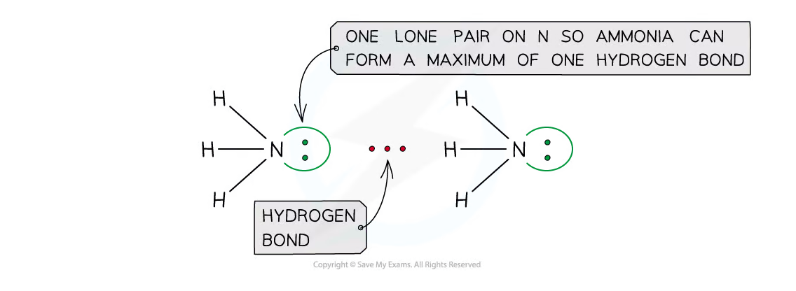
2.2.5 Properties explained by intermolecular forces
Anomalous properties of water
Hydrogen bonding gives water several properties that are unusual for a small molecule：
- relatively high melting point and boiling point；
- high surface tension；
- liquid water is denser than solid ice。
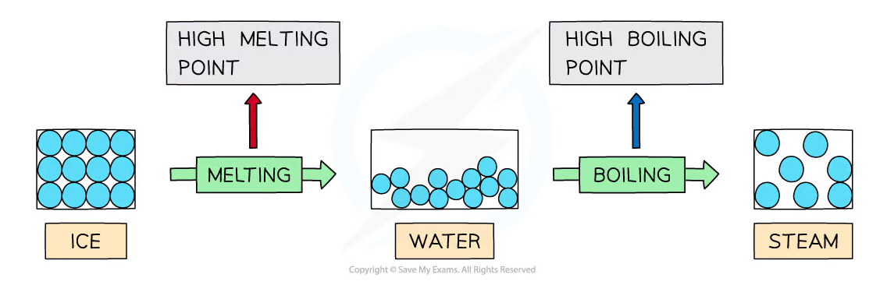
High boiling point
Group 16 hydrides H₂S、H₂Se and H₂Te 的 enthalpy of vaporisation generally increases with number of electrons，因为 dispersion forces become stronger。按 this trend，H₂O 应该有 relatively low enthalpy of vaporisation；但 water 的实际 value much higher，因为 molecules 之间还有 strong hydrogen bonds。
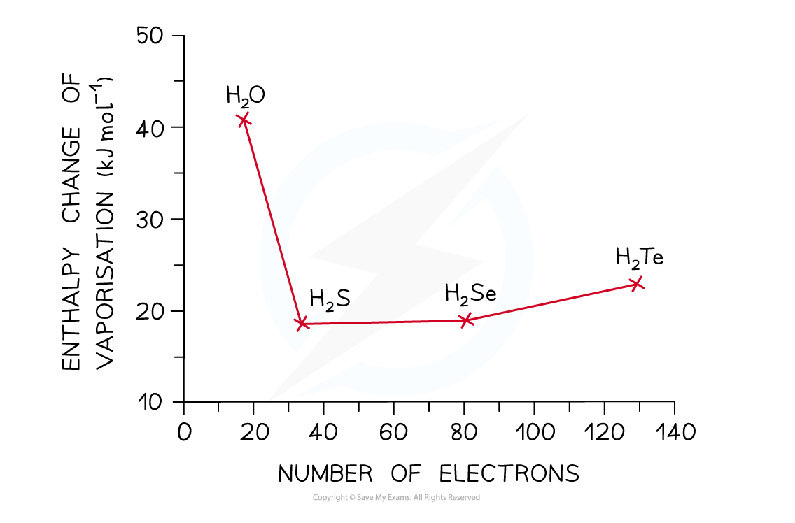
High surface tension
Surface tension 是 liquid surface resist external forces 的 ability。Surface water molecules 会被下面和旁边的 molecules 通过 hydrogen bonds 向内拉，形成 a tight, compressed surface layer。Inner molecules 则被各个方向的 attractions 拉动，overall force 更接近 balanced。
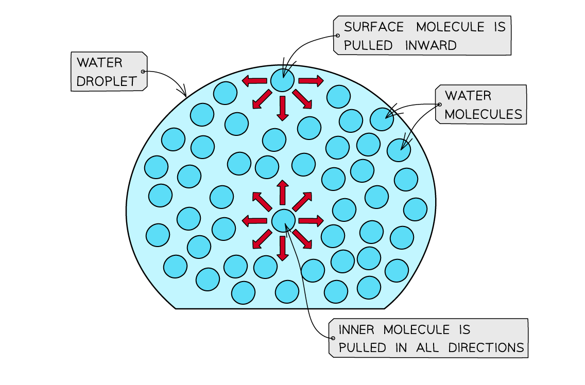
Lower density of ice
In liquid water，molecules 可以 relatively close together。Ice 中 hydrogen bonds hold molecules in a more open lattice，molecules average separation becomes larger，因此 ice density is about 9% lower than liquid water。
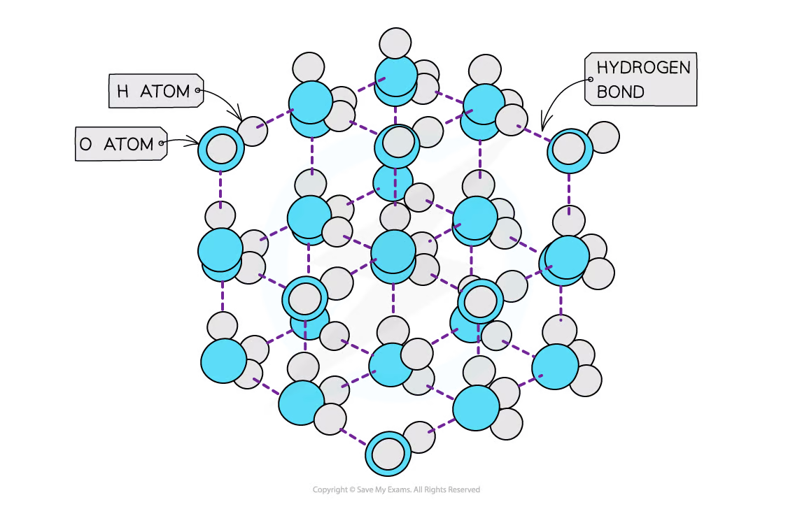
Ice 中 H-O-H angle 约为 109.5°，接近 undistorted tetrahedral angle；liquid water 中约为 104.5°。这是因为 oxygen lone pairs 会被 neighbouring δ+ H 吸引，改变 electron-pair repulsion arrangement。
Effect of branching
对于 isomers with the same molecular formula，branching 会 reduce molecular surface area 和 neighbouring molecules 的 contact points。Surface area 越小，molecules 越难紧密接触，dispersion forces 越弱，通常 boiling point 越低。
因此 straight-chain pentane 的 boiling point 高于 highly branched 2,2-dimethylpropane。
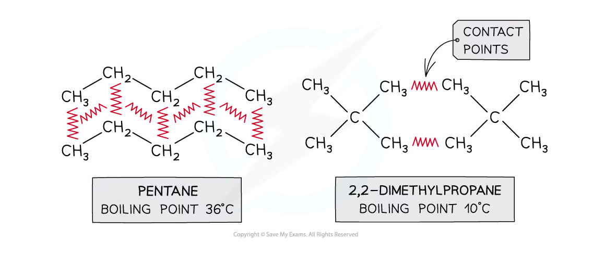
Effect of number of electrons
Number of electrons 越多，electron cloud 越容易 distort，instantaneous dipoles 的 magnitude 和 frequency 越大，dispersion forces 越 strong。于是 noble gases 的 boiling points 随 electron number 增加而升高；alkanes 也呈现相同 trend。
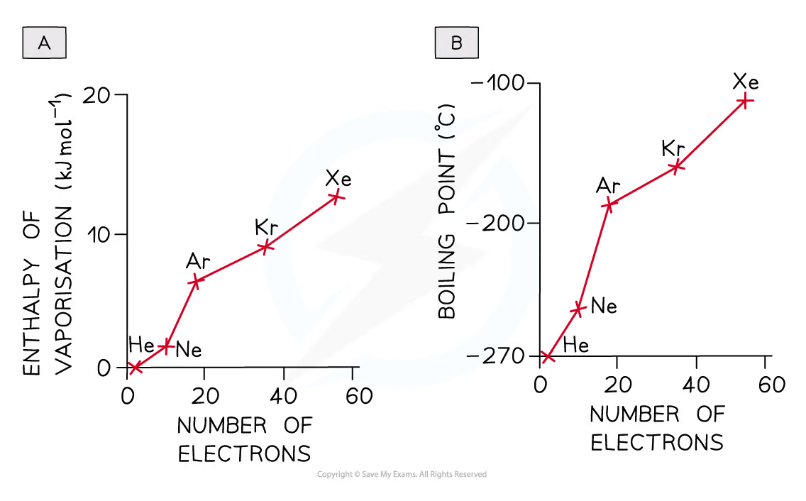
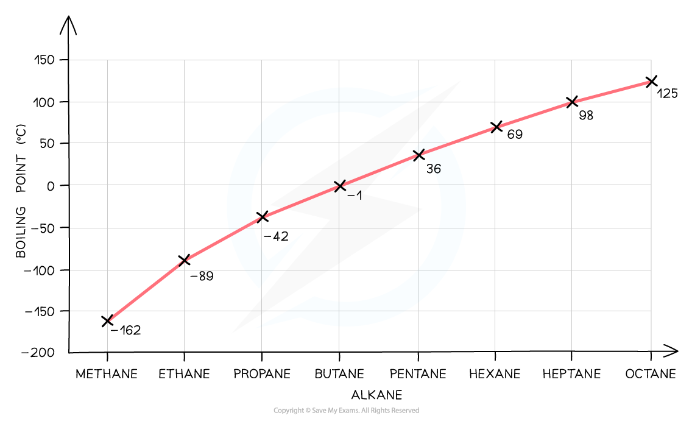
Alcohols and hydrogen halides
Alcohols contain O-H，因此 alcohol molecules form hydrogen bonds。对应 alkane 只有 dispersion forces，所以 alcohol 的 boiling point significantly higher；例如 propane 的 boiling point 约 −42 °C，propanol 约 97 °C。
Hydrogen halides 的 boiling points generally increase down the group，因为 larger molecules have more electrons and stronger dispersion forces。HF 是 exception：它的 small size does not give strong dispersion forces，但 H-F 之间 hydrogen bonding 使 boiling point anomalously high。
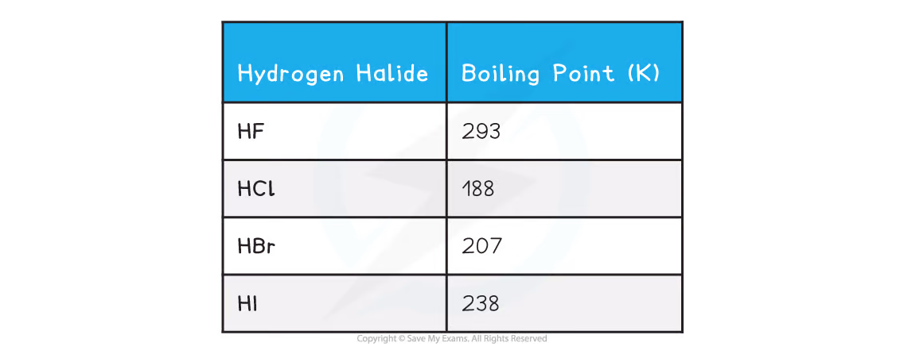
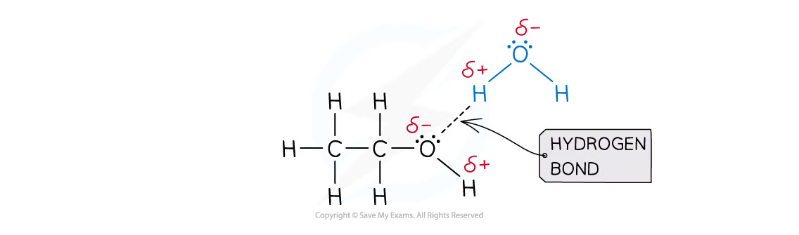
2.2.6 Solvent choice and solubility
Like dissolves like
Solvent choice 的 general principle 是 like dissolves like：
- non-polar solutes dissolve best in non-polar solvents，例如 hydrocarbons；主要形成 dispersion forces；
- polar covalent solutes dissolve better in polar solvents，通过 dipole-dipole interactions 或 hydrogen bonding；
- ionic compounds 通常更容易溶于 polar solvents，例如 water；
- giant covalent structures 通常不溶于 solvents，因为 breaking the strong covalent lattice requires too much energy。
Ethanol 与 water 可以通过 hydrogen bonds strongly interact，所以 ethanol readily soluble。随着 alcohol carbon chain 变长，non-polar hydrocarbon part 占比增加，overall water solubility decreases；ethanol 比 hexanol 更 soluble。
Haloalkanes
Haloalkane 中的 C-X bond 是 polar bond，但 haloalkane molecule 不能形成 hydrogen bonds，因为 molecule 内没有 H-F、H-O 或 H-N bond。因此 haloalkanes 通常 only partially soluble in water。
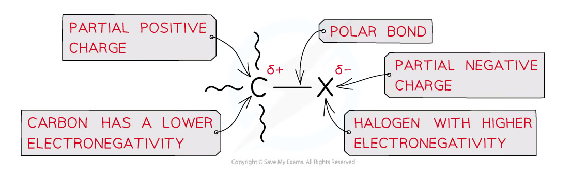
Ionic compounds in polar solvents
Dissolving an ionic solid in water requires two competing processes：
- overcome attractions within the ionic lattice；
- form attractions between ions and polar water molecules。
Water molecules orient around ions：water 的 δ− O end surrounds cations，δ+ H ends surround anions。这些 ion-dipole attractions help separate and stabilise the ions in solution。
Ionic compound 的 solubility depends on the balance between lattice attractions and ion-dipole attractions。Higher ionic charge often means stronger lattice attractions and lower solubility，but this is a general trend with exceptions，不能当作 universal rule。
Exam checklist
Source note
本页内容来自项目内的 Note per Chapter/Note per Chapter/2.2 Intermolecular Forces.pdf.pdf。PDF 中的 diagrams 已独立提取、去除 dark-background duplicates，并统一处理为 white-background PNG，存放在 assets/notes/2-2-intermolecular-forces/。